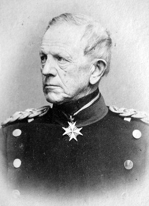
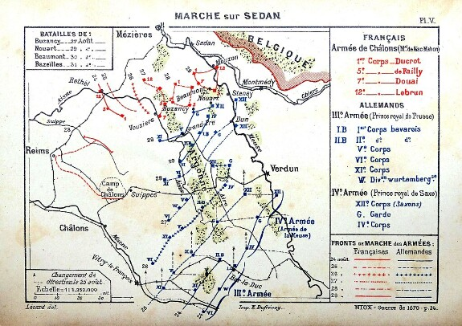
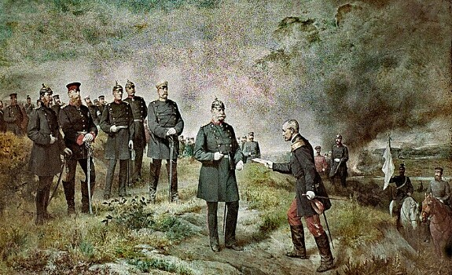
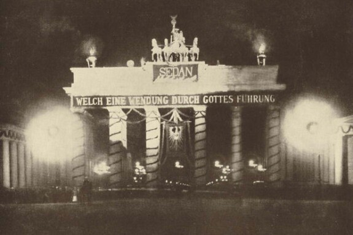

Битва при Седане 1 сентября 1870 года
Автор статьи: Максим Вахминцев
Опубликовано: 9 сентября 2024
Опубликовано: 9 сентября 2024
1 сентября является знаковым днем для человечества. Нет - не только потому, что он является Днем знаний и в этот день начинается учебный год. В историю он вошел, в том числе, и из-за начала 1 сентября 1939 года вторжения германского вермахта в Польшу и развязывания Второй мировой войны.
Я бы хотел обратить ваше внимание на другое, на самом деле, не менее знаковое событие. 1 сентября была 154-я годовщина битвы при Седане, ставшей решающей в ходе франко-прусской войны 1870-1871 гг. Победа германских войск привела к пленению Наполеона III, императора французов и племянника великого Наполеона, а на следующий день и к свержению Второй империи во Франции. До мая 1871 года борьбу с немецкими войсками, занявшими за это время Париж, вела уже Третья республика.
Битва при Седане также знаменовала собой вершину могущества Пруссии, прогрессивность ее военной мысли. Начальник Большого Генерального штаба Хельмут фон Мольтке, ранее принесший Пруссии победы в войнах с Данией и Австрией, пользовался тем, что французы сосредоточили главные силы на границе и, в ходе ряда успешных сражений, вытеснил тех на север, к бельгийской границе, открыв тем самым германской армии путь на Париж.
Я бы хотел обратить ваше внимание на другое, на самом деле, не менее знаковое событие. 1 сентября была 154-я годовщина битвы при Седане, ставшей решающей в ходе франко-прусской войны 1870-1871 гг. Победа германских войск привела к пленению Наполеона III, императора французов и племянника великого Наполеона, а на следующий день и к свержению Второй империи во Франции. До мая 1871 года борьбу с немецкими войсками, занявшими за это время Париж, вела уже Третья республика.
Битва при Седане также знаменовала собой вершину могущества Пруссии, прогрессивность ее военной мысли. Начальник Большого Генерального штаба Хельмут фон Мольтке, ранее принесший Пруссии победы в войнах с Данией и Австрией, пользовался тем, что французы сосредоточили главные силы на границе и, в ходе ряда успешных сражений, вытеснил тех на север, к бельгийской границе, открыв тем самым германской армии путь на Париж.

Хельмут фон Мольтке-старший (1800-1891) – генерал-фельдмаршал,
начальник Большого Генерального штаба Пруссии. Автор планов войн с Данией, Австрией и Францией, увенчавшихся победой Пруссии и ее союзников.
Один из самых выдающихся военных стратегов и мыслителей в истории.
начальник Большого Генерального штаба Пруссии. Автор планов войн с Данией, Австрией и Францией, увенчавшихся победой Пруссии и ее союзников.
Один из самых выдающихся военных стратегов и мыслителей в истории.
Как в свое время при Кениггреце, Мольтке зажимал противника в «клещи», отрезая того от связи с тылом и столицей. Способствовали этому как более последовательная стратегия немецкого командования, так и отлаженное взаимодействие войск, обладавших свободой маневра. Германская армия была построена на началах всеобщей воинской повинности, тогда как французская состояла из опытных ветеранов, но не обладала при этом достаточными резервами. При этом, по словам самого Мольтке, она испытывала серьезные проблемы с мобилизацией и снабжением.

Карта движения германских и французских войск к Седану.
Французы изначально намеревались наступать в Пфальце, имея целью отрезать Южную Германию от Пруссии и встретиться с австрийскими войсками. Наполеон в целом возлагал большие надежды на помощь союзников – ожидалось как наступление итальянцев в Баварии, так и вторжение датчан со стороны Шлезвига при поддержке французского флота. Этот план имел шанс на успех только при быстрых и скоординированных действиях французской армии, однако стоявшие перед ней проблемы делали реализацию этого амбициозного плана невозможной.
Немцы воспользовались проблемами противника и, после провала наступления французов через Саарбрюкен, разбили тех при Висамбуре (Вейсенбурге), Марс-ла-Туре и Бомоне. Войска маршала Базена оказались окружены у Меца, оставить который не могли по политическим соображениям – удержание Эльзаса и Лотарингии позволяло бы Франции занимать достойные позиции на мирных переговорах. На выручку Базену были направлены войска Мак-Магона, вместе с ними на фронт направился и сам император Наполеон. Дойти до Базена они не успели – к 30 августа немцы взяли Мезьер и заперли французов у Седана.

Немцы воспользовались проблемами противника и, после провала наступления французов через Саарбрюкен, разбили тех при Висамбуре (Вейсенбурге), Марс-ла-Туре и Бомоне. Войска маршала Базена оказались окружены у Меца, оставить который не могли по политическим соображениям – удержание Эльзаса и Лотарингии позволяло бы Франции занимать достойные позиции на мирных переговорах. На выручку Базену были направлены войска Мак-Магона, вместе с ними на фронт направился и сам император Наполеон. Дойти до Базена они не успели – к 30 августа немцы взяли Мезьер и заперли французов у Седана.
{kind=link}
Генерал Релье вручает королю Пруссии Вильгельму письмо Наполеона с
готовностью капитулировать.
Отход в Бельгию не рассматривался французским командованием, поскольку в таком случае войска оказались бы интернированы на нейтральной территории и потеряли бы возможность продолжать боевые действия, защитить Париж от немецкого наступления. Битва началась ранним утром 1 сентября и сразу же французы поставили себя в невыгодное положение, заняв высоты, простреливаемые прусской артиллерией. К 10 часам утра они потеряли Базей, а к полудню французы были полностью окружены. Пехота и кавалерия отчаянно пытались прорвать позиции немцев на правом фланге, но несли огромные потери от артиллерийского огня.
В 3 часа дня французы в панике побежали к Седану, надеясь укрыться за его стенами. На единственном подвесном мосту образовалась давка, отступавших обстреливали немецкие орудия. В город успели войти около 100 тысяч человек, которые моментально подверглись артиллерийской бомбардировке. Сражение закончилось, когда французы вывесили белый флаг. По словам Мольтке, их потери составили 17 тысяч человек. В плен были взяты 104 тысячи солдат и офицеров. Потери немцев едва ли достигли 9 тысяч человек.

В 3 часа дня французы в панике побежали к Седану, надеясь укрыться за его стенами. На единственном подвесном мосту образовалась давка, отступавших обстреливали немецкие орудия. В город успели войти около 100 тысяч человек, которые моментально подверглись артиллерийской бомбардировке. Сражение закончилось, когда французы вывесили белый флаг. По словам Мольтке, их потери составили 17 тысяч человек. В плен были взяты 104 тысячи солдат и офицеров. Потери немцев едва ли достигли 9 тысяч человек.
«Какой с Божьей помощью поворот!» - плакат на Бранденбургских воротах с фразой короля Вильгельма,
сказанной им, когда тот узнал о готовности Наполеона капитулировать.
сказанной им, когда тот узнал о готовности Наполеона капитулировать.
Значение этого сражения в европейской истории вряд ли можно переоценить. Шарль Луи Наполеон Бонапарт на протяжении почти что 20-ти лет был одним из самых могущественных правителей Старого Света, претендовал на восстановление гегемонии Франции в Западной Европе после Венского конгресса 1815 года и низложения Наполеона I. Во многом этому способствовали победы в Крымской войне 1853-1855 гг. и австро-итало-французской войне 1859 годов. Французский император был принципиальным противником единства Германии, к чему стремилась Пруссия Вильгельма I и Отто фон Бисмарка.
Падение режима Бонапартов и установление во Франции республики окончательно завершило эпоху Венской системы международных отношений, ориентированной на сугубо монархические государства. Через 10 лет в Европе стали формироваться, в том числе с участием Германии и Франции, альянсы, которые в 1914 году столкнутся между собой в Первой мировой войне. Речь идет, разумеется, о блоке Центральных держав и Антанте.
Рекомендуемая литература
1. Бодров А. В., Власов Н. А. Железо и кровь. Франко-германская война. — СПб.: Евразия, 2019. – 544 c.
2. Власов Н. А. Прусский блицкриг против Франции. Причины успехов Северо-Германского союза в августовских сражениях 1870 года. // Военно-исторический журнал. — 2021. — № 4. — С. 39—43.
3. Леер Г. А. Публичные лекции о войне 1870-1871 годов между Франциею и Германиею от Седана до конца войны... — СПб.: тип. Деп. уделов, 1873. — 366 c.
4. Мольтке Г. История германо-французской войны 1870—1871 гг— М.: Воениздат, 1937. — 360 c.
5. Свечин А. А. Эволюция военного искусства. Том II. — М.-Л.: Военгиз, 1928. – 619 c.
Падение режима Бонапартов и установление во Франции республики окончательно завершило эпоху Венской системы международных отношений, ориентированной на сугубо монархические государства. Через 10 лет в Европе стали формироваться, в том числе с участием Германии и Франции, альянсы, которые в 1914 году столкнутся между собой в Первой мировой войне. Речь идет, разумеется, о блоке Центральных держав и Антанте.
Рекомендуемая литература
1. Бодров А. В., Власов Н. А. Железо и кровь. Франко-германская война. — СПб.: Евразия, 2019. – 544 c.
2. Власов Н. А. Прусский блицкриг против Франции. Причины успехов Северо-Германского союза в августовских сражениях 1870 года. // Военно-исторический журнал. — 2021. — № 4. — С. 39—43.
3. Леер Г. А. Публичные лекции о войне 1870-1871 годов между Франциею и Германиею от Седана до конца войны... — СПб.: тип. Деп. уделов, 1873. — 366 c.
4. Мольтке Г. История германо-французской войны 1870—1871 гг— М.: Воениздат, 1937. — 360 c.
5. Свечин А. А. Эволюция военного искусства. Том II. — М.-Л.: Военгиз, 1928. – 619 c.